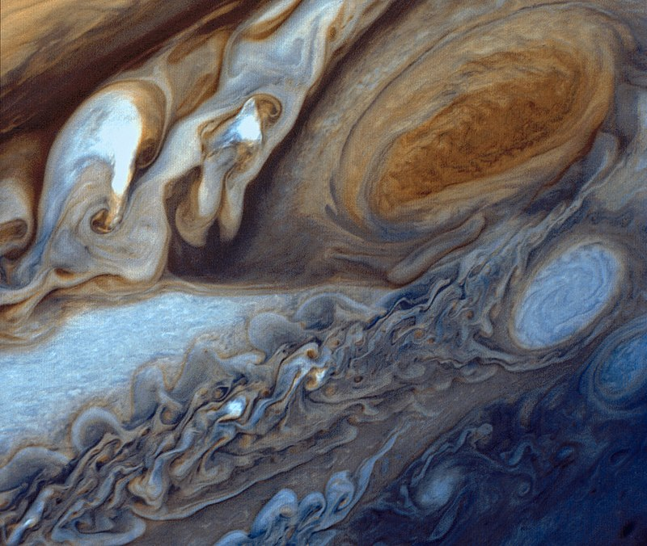
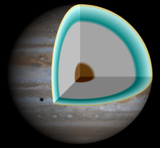
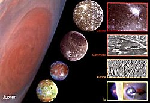
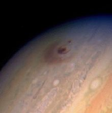

Юпитер
 Юпитер е петата по отдалеченост от Слънцето
планета и най-голямата (с голяма преднина) в Слънчевата система. Юпитер и другите газови гиганти в
Слънчевата система (Сатурн, Уран и
Нептун) са известни още като юпитероподобни планети, планети-гиганти. Юпитер е известен на човечеството още
от древни времена, и присъства във вярванията и митологиите на много култури. Планетата е именувана от
римляните и носи името на бог
Юпитер от тяхната митология. В гръцката митология това е главният бог, гръмовержецът Зевс. Затова
астрономическият символ е стилизирано изображение на светкавица. (♃) Погледнат от Земята, Юпитер има
величина от -2,94, което го прави най-яркият
обект на нощното небе след Луната и Венера. Основната част от общата му маса е водород; една четвърт от
масата му се състои от хелий. Наличието на ядро не е потвърдено, но е възможно скалисто такова да съществува
и да е съставено от тежки
елементи. Бързото въртене на планетата ѝ придава формата на сплеснат сфероид.
Юпитер е петата по отдалеченост от Слънцето
планета и най-голямата (с голяма преднина) в Слънчевата система. Юпитер и другите газови гиганти в
Слънчевата система (Сатурн, Уран и
Нептун) са известни още като юпитероподобни планети, планети-гиганти. Юпитер е известен на човечеството още
от древни времена, и присъства във вярванията и митологиите на много култури. Планетата е именувана от
римляните и носи името на бог
Юпитер от тяхната митология. В гръцката митология това е главният бог, гръмовержецът Зевс. Затова
астрономическият символ е стилизирано изображение на светкавица. (♃) Погледнат от Земята, Юпитер има
величина от -2,94, което го прави най-яркият
обект на нощното небе след Луната и Венера. Основната част от общата му маса е водород; една четвърт от
масата му се състои от хелий. Наличието на ядро не е потвърдено, но е възможно скалисто такова да съществува
и да е съставено от тежки
елементи. Бързото въртене на планетата ѝ придава формата на сплеснат сфероид.
Общ преглед
Юпитер е 2,5 пъти по-масивен от всички останали планети в Слънчевата система взети заедно – толкова масивен, че барицентърът му със Слънцето лежи над повърхността на Слънцето (на 1,068 слънчеви радиуса от центъра на звездата). Юпитер е 318 пъти по-масивен от Земята, има диаметър 11 пъти по-голям от земния и обемът му е 1300 пъти повече от земния. Понякога бива наричан „неуспяла звезда“, но със същия успех някой астероид може да бъде наречен „неуспяла планета“. Въпреки размерите му, извън Слънчевата система са открити планети дори с още по-голяма маса. Счита се, че Юпитер има максималните размери, които едно „студено тяло“ (в чието ядро не протичат термоядрени реакции) може да достигне. Ако планетата е по-масивна, то нейните размери ще намалеят поради увеличената ѝ плътност и ако тя стане достатъчно масивна (около 70 – 75 маси на Юпитер) във вътрешността ѝ ще започнат да протичат термоядрени реакции и планетата ще се превърне в звезда. Границата между планета и най-малките известни звезди – кафяви джуджета не е ясно изразена, въпреки особените спектрални линии на последните. Юпитер се върти най-бързо от всички планети в Слънчевата система, в резултат на което полюсите ѝ са видимо сплеснати. Най-известната забележителност на повърхността ѝ е Голямото червено петно, антициклонална буря с размери, по-големи от тези на Земята. Юпитер е постоянно покрит с плътен облачен слой.
Юпитер обикновено е четвърти по яркост обект в небето след Слънцето, Луната и Венера; понякога обаче Марс е по-ярък, докато на моменти Юпитер е по-ярък от Венера. Юпитер е бил известен от древността. Галилео Галилей през 1610 г. открива четирите му най-големи спътника, наречени в негова чест галилееви луни.Те са: Йо, Европа, Ганимед и Калисто. Откритието на Галилей е първото наблюдавано движение на небесни тела не около Земята (която тогава се е считала за център на Вселената – виж геоцентрична система), а около друго небесно тяло. Това е важно доказателство против геоцентричната система. Публичното одобрение на Галилео за хелиоцентричната система на Николай Коперник го въвлича в списъка на заподозрените в разпространението на ереси от Светата инквизиция. Юпитер може да се наблюдава отлично при безоблачна нощ с бинокъл или малък телескоп. Непосредствено видими са четирите галилееви луни, когато не са скрити от диска на планетата. При 20 – 30 пъти увеличение облачните пояси на Юпитер стават видими. За наблюдението на Голямото червено петно обаче е необходимо по-голямо увеличение.
Физически характеристики
Състав
Юпитер има сравнително малко скално ядро, заобиколено от слоеве (от вътре навън) метален водород, течен водород и газообразен водород. Преходите между слоевете са плавни. Юпитер не се върти като твърдо тяло. Спрямо главния меридиан на Юпитер, екваториалната зона извършва пълно завъртане средно всеки 9 часа 50 минути и 30,003 секунди (по дефиниция средната скорост на въртене е 877,90°/ден), известна още като Система I. Система II включва всички ширини без Система I. Всички елементи от повърхността на планетата в тези райони (в това число и Голямото червено петно) извършват едно завъртане средно всеки 9 часа 55 минути и 40,632 секунди (по дефиниция 870,27°/ден).
Атмосфера
 Атмосферата на Юпитер се състои от приблизително 86% водород и 14% хелий по брой атоми и 75% водород, 24% хелий и 1% други примеси по маса. Атмосферата съдържа следи от метан, водна пара, амоняк и скални примеси както и минимални количества въглерод, етан, сероводород, неон, кислород, фосфин и сяра. Най-външният слой на атмосферата съдържа кристали замръзнал амоняк. Атмосферното съдържание е много близо до първичната слънчева мъглявина. Сатурн има подобен състав, но Уран и Нептун имат много по-малко водород и хелий. За горните слоеве на атмосферата на Юпитер е характерно диференциално въртене, ефект за първи път забелязан от Джовани Доменико Касини през 1690 г. Едно пълно завъртане на атмосферата в полярните зони е с около 5 минути по-дълго от това в екваториалните зони. Също така облачните пояси на Юпитер на различни височини се придвижват в различни посоки в зависимост от преобладаващите ветрове. Взаимодействията между тези циркулационни пояси пораждат бури и различни видове турбулентност, като скоростта на ветровете достига до 600 km/h. Голямото червено петно е особено интензивна буря. Единственият досега космически апарат, директно изследвал атмосферата на Юпитер, е спускаемият модул на Галилео.
Вътрешна структура
Предполага се, че Юпитер се състои от ядро с голяма плътност, съставено от смес на различни елементи; то е обгърнато от слой течен метален водород, примесен с хелий, и външен слой, състоящ се предимно от молекулярен водород. Тази характеристика е съвсем обща, и все още има голям брой неясноти около пластовете на планетата. Ядрото често бива смятано за скалисто, но подробна информация за състава му все още не е известна, нито пък са известни свойствата на веществата при огромната температура и налягане на тези дълбочини. Съществуването на твърдо ядро е предположено през 1997 година след гравитационни измервания, посочващи маса 12 – 45 пъти масата на Земята или около 3% – 15% от общата маса на Юпитер. Наличието на ядро поне в даден период от историята на планетата е дадено като вероятност от моделите на планетарно формиране, включващи първоначално образуване на скалисто или заледено ядро, което е достатъчно масивно, за да събира водород и хелий от протопланетарният диск. Ако се приеме, че е съществувало, то може да се е свило в резултат на конвекция и съставът му да е бил пренесен от теченията към по-високите слоеве на планетата. Възможно е вече изобщо да не съществува ядро, тъй като настоящите данни не са достатъчно точни, за да бъде напълно изключено това предположение.
Несигурността на моделите е свързана с вероятност за грешка в следните параметри: един от коефициентите на въртене (J6), използван за определяне на гравитационния момент на планетата, екваториалният радиус и температурата при налягане от 1 бар. Очаква се мисията JUNO, чието начало е предвидено за 2011 г., да ограничи стойността на тези параметри, и по този начин да се реши, или най-малкото да се постигне напредък по проблема с ядрото. Центърът на планетата е заобиколен от наситен метален водород с огромен обем, заемащ около 78 на сто от радиуса на Юпитер. Подобно на дъжд, капчици от хелий и неон се утаяват надолу през този слой, като по този начин изобилието на тези елементи в горната атмосфера намалява.  Над този слой метален водород се намира прозрачна вътрешна атмосфера от водород както в течно, така и в газообразно състояние. Газообразната част се простира на дълбочина от около 1000 km под облачния слой. Вместо ясна граница между тези различни агрегатни състояния на водорода най-вероятно присъства плавна градация от газ към течност с увеличаване на дълбочината. Температурата и налягането на Юпитер нарастват стабилно с увеличаването на дълбочината. В областта на преходния етап между нормален и метален водород се смята, температурата е 10 000 К, а налягането е 200 GPa. Температурата в центъра на планетата се изчислява на 36 000 К, а вътрешното налягане е около 3,000 – 4,500 GPa.
Пръстени
Юпитер има бледи пръстени, съставени от прахообразни частици попаднали в орбита вследствие на сблъсъци на метеорити с нейните спътници. Пръстените се разделят на 4 основни компонента: тънък вътрешен слой, известен като „ореол“; относително ярък и изключително тънък „основен пръстен“ и два широки и дебели външни „газови пръстени“, кръстени на луните, от чийто материал са съставени: Амалтея и Тива. Основният пръстен и „ореолът“ са съставени от прах, изхвърлен при сблъсъците с висока скорост на метеорити с луните Метис, Адрастея и други небесни тела. Снимките с висока разделителна способност, получени от New Horizons през февруари и март 2007 разкриват допълнителна информация за структурата на основния пръстен. Съществува и още един изключително тънък и отдалечен пръстен с ретроградно движение, за който се предполага, че е прихванат междупланетен прах.
Магнитосфера
Юпитер има голяма и мощна магнитосфера – ако тя се виждаше с просто око от Земята, би изглеждала пет пъти по-голяма от диска на Луната. Магнитното поле прихваща множество частици в радиационните пояси на планетата и струи газ изригващ от Йо в тороидна орбита около Юпитер. Магнитосферата на планетата е най-голямата структура в Слънчевата система. Апаратите от мисията Пионер показват, че магнитното поле на Юпитер е 10 пъти по-мощно от земното и съдържа 20 000 пъти повече енергия. Бордните инструменти показват, че северния магнитен полюс почти съвпада с южния географски полюс на планетата с отклонение от 11 градуса и отместен от геометричния център по начин подобен на земното магнитно поле. Апаратите регистрират ударна вълна на разстояние от 26 милиона километра от Юпитер и магнитна опашка, простираща се отвъд орбитата на Сатурн. Данните от измерванията показват, че ширината на магнитното поле откъм слънчевата страна на Юпитер е нестабилно и варира според интензивността на слънчевия вятър. Част от особено интензивните частици, откъснали се от магнитосферата на планетата, могат да достигнат чак до земната орбита. Регистрирани са високоенергийни протони в радиационния пояс на Юпитер и е установено наличието на електрически токове между Юпитер, Йо и някои други спътници.
Орбита и въртене
Средното разстояние между Юпитер и Слънцето е 778 000 000 km (около 5,2 пъти повече от средното разстояние между Земята и Слънцето, или 5,2 AU), като планетата завършва една пълна орбита около звездата за 11,86 години. Наклонът на оста на Юпитер е относително малък: само 3,13 °. В резултат на това на планетата не присъстват значителните сезонни промени, характерни за Земята и Марс например. Юпитер също така демонстрира най-бързото въртене от всички планети на Слънчевата система, осъществявайки едно завъртане около оста си за малко по-малко от десет часа. Това създава екваториална издутина, лесно забележима от Земята дори с любителски телескоп. В резултат на това екваториалният диаметър е с 9 275 km по-дълъг от полярния.
Спътниците на Юпитер
За Юпитер се знае че, има поне 79 естествени спътника. От тях 63 са с диаметър по-малък от 10 km и са открити след 1975 г.
Галилеевите луни
 Орбитите на Йо, Европа и Ганимед са в резонанс на Лаплас; за всеки четири орбити на Йо Европа прави две, а Ганимед прави точно една. Този ефект разтегля техните орбити във форма на елипси. Приливните сили на Юпитер от друга страна се стремят да направят орбитите на неговите спътници по-близки до кръгови. Гравитацията на планетата разтяга спътниците в елипсоидна форма по-силно, когато те са близко до него и им позволява да възстановят сферичната си форма, когато са далече. Тези цикли водят до нагряване във вътрешността спътниците, най-вече на Йо, известен със изключителната си вулканична активност, и в по-малка степен на Европа.
Класификация на спътниците на Юпитер
Преди време се е смятало, че спътниците на Юпитер са организирани в групи от четири, но скорошни
открития на множество малки външни спътници усложняват това деление; сега се смята, че съществуват шест
основни групи:
1. Вътрешна група от четири малки спътника всеки с диматър, по-малък от 200 km, с орбита по-близка
от 200 000 km и инклинация най-много 0,5°.
2. Групата на галилееви луни, всички открити от Галилео Галилей, с орбита от 400 000 до 2 000 000
km.
3. Спътника Темисто е в самостоятелна група, с орбита между галилеевите луни и следващата група.
4. Групата на Хималия се състои от спътници с близки орбити между 11 и 12 милиона километра.
5. Групата на Карме се състои от спътници на средно разстояние от 23 404 000 km от Юпитер със
средна инклинация от 165°.
6. Групата на Ананке няма точно установени граници; съдържа спътници на средно разстояние 21 276
000 km и средна инклинация 149°.
7. Групата на Пасифая е сравнително рядка и съдържа всички най-външни спътници.
Смята се, че групите малки спътници имат общ произход, образувани вследствие на сблъсък между два или
разпадане на голям спътник.
Сблъсъци с комети
Сблъсък на комета с повърхността на Юпитер. Тъмните облаци, породени от удара, са по-големи от Земята. През периода 16 юли-22 юли 1994 г. над 20 фрагмента от кометата Шумейкър-Леви 9 навлизат в южната част на атмосферата на Юпитер. Това е първото директно наблюдение на сблъсък между два обекта в Слънчевата система. Вероятно поради голямата си маса и разположението си във вътрешната част на Слънчевата система Юпитер търпи най-много сблъсъци с комети сред всички други планети.
Юпитер в киното и фантастиката
На Юпитер се развива действието на класическия филм на Стенли Кубрик от 1968 г. „2001: Космическа
Одисея“. В оригиналния роман на Артър Кларк действието се развива на Сатурн. В продълженията на романа и
книгата „Втора одисея: 2010“ за сгъстяване на ядрото на планетата и превръщането ѝ в звезда се използва
напреднала технология.
Новелата на Артър Кларк от 1988 г. „Среща с Медуза“ и романът му „2010“ описват пътешествия до дълбините
на атмосферата на Юпитер, където се носят огромни същества с размерите на цял град.

Петият роман от поредицата „Лъки Стар“ на Айзък Азимов се нарича „Луните на Юпитер“, където и се развива
действието. Изпробвайки експериментален антигравитационен двигател, кораб каца на Йо. Но след излитането
от спътника се оказва, че вследствие саботаж антигравитационният двигател е повреден и няма начин да се
преодолее огромната гравитация на Юпитер. Тогава Лъки Стар поема командването и нарежда корабът да се
ускори КЪМ Юпитер. В отговор на въпросите на екипажа обяснява, че така ще успеят да кацнат на Амалтея,
която въпреки името си „Юпитер 5“ е на по-вътрешна орбита, понеже номерацията е давана по поредността на
откриването, а не по отдалечеността от планетата. По този начин спечелват време за ремонт на двигателя и
успешно се прибират в базата си.
Романът на Бен Бова от 2001 г. „Юпитер“ също описва пътешествие в облаците на Юпитер и откриването на
същества, живеещи там.
Във вселената на „Стар Трек“ на Юпитер се намира станцията Юпитер, която се ползва за поправки на
космически кораби и програмиране на холопалубата.
Романите на Ким Стенли Робинсън „Спомен за Белота“, „Зелен Марс“ и „Син Марс“ представят идеи за
колонизацията на Юпитер и особено на неговите спътници.
Юпитер заема централно място в романа на Петер Хамилтон „Зората на Нощта“.
В изданията „Биография на космически тиранин“ от Пиърс Антъни Юпитер е аналогичен на Северна Америка, а
спътниците му – на карибските острови и Централна Америка. Летящите градове в атмосферата на планетата
представляват САЩ, а Голямото червено петно – Мексико.
В научно-фантастичния сериал „Вавилон 5“ капитан Джон Шеридан навлиза с космически кораб в горната
атмосфера на Юпитер в опит да избяга от вражески кораб на Сенките. Възползвайки се от високото налягане
в атмосферата на планетата и силната ѝ гравитация, той успява да вкара преследвача си в капан. Корпусът
на вражеския кораб е смачкан и той няма достатъчно мощност, за да избяга от притеглянето на газовия
гигант.